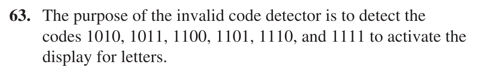
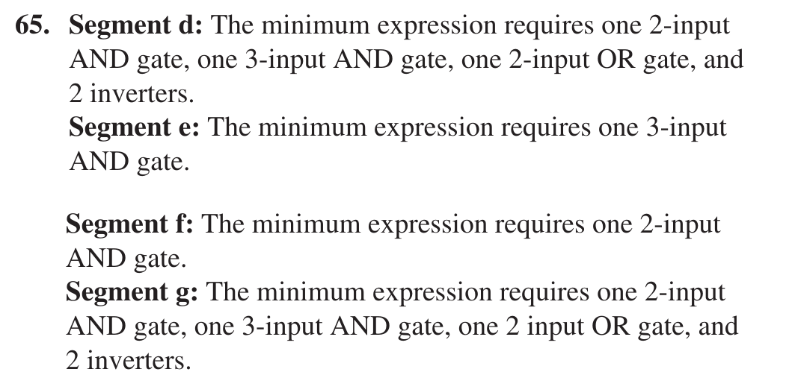
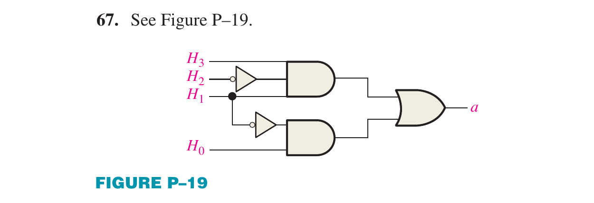

Floyd: Ch.4 Applied Logic: Seven-Segment Display (p.244-249; problems 62-71, p.256) + Ch.6 section 6-5 decoder/driver 74HC47 and zero suppression (p.338-340) + section 6-8 7-segment multiplexing (p.353). Floyd KHÔNG có nội dung về EFIS/ECAM/ACARS hay CRT/LCD ngoài mức 7 đoạn: phần lớn module này dựa vào Tooley và bộ slide bài giảng.
Đây là module có bộ slide bài giảng riêng (36 slide infographic, đọc trực tiếp từng slide). Tooley khớp tốt (3 chương rải rác: Ch.1, Ch.11, Ch.15). Floyd chỉ khớp ở phần 7 đoạn (Ch.4, Ch.6), nên quiz Floyd của module này ít (7 câu) và bài tự luận chỉ có 4 bài lẻ của Applied Logic.
Màn hình là điểm cuối của mọi chuỗi dữ liệu trên máy bay: số đo từ cảm biến, ADIRU hay máy tính hệ thống cuối cùng phải đến mắt phi công qua một mặt kính. Module này đi từ lịch sử buồng lái và yêu cầu đối với hệ thống hiển thị, qua các công nghệ CRT, LED 7 đoạn và LCD (kèm các phép tính độ phân giải, quét raster và giải mã 7 đoạn), đến hệ thống EFIS/EIS (PFD, ND) và ECAM/EICAS trên Airbus A320, rồi kết thúc bằng bảo trì tập trung (CMC) và ACARS.
Bấm vào ảnh để phóng to📖 Giải thích cho người mới bắt đầu
Lịch sử này gói trong một xu hướng: càng về sau, số đồng hồ riêng lẻ giảm còn số thông tin trên mỗi màn hình tăng. Hàng trăm đồng hồ ở thập niên 1960 và 1970 nghĩa là hàng trăm dây dẫn, hàng trăm điểm hỏng và rất nhiều thứ phi công phải liếc qua liên tục. Màn hình số gom nhiều dữ liệu vào cùng một chỗ, lại có thể đổi trang tuỳ giai đoạn bay.
Sách Tooley gọi kết quả cuối là glass cockpit (buồng lái kính), dùng CRT và LCD để hiển thị cùng loại thông tin mà trước kia dùng đồng hồ cơ điện (mục 1.1).
PHẦN 1/5 · 06
Bốn thế hệ Airbus: A310, A320, A380, A350
Năm
Máy bay
Điểm mới về hiển thị
1978
A310
Màn hình đa chức năng đầu tiên (màn hình điện tử hiển thị thông số động cơ và hệ thống)
1988
A320
Buồng lái "toàn màn hình": 6 màn hình CRT, điều khiển bay điện, có FMS
2007
A380
AMLCD độ sáng cao, IMA (avionics mô-đun tích hợp), thiết bị tương tác (FCU, MCDU, bàn phím)
2015
A350
Màn hình LCD rất lớn, độ phân giải cao, cảm ứng, ít công tắc vật lý
Mục tiêu thiết kế xuyên suốt: đơn giản hoá nhiệm vụ của phi hành đoàn, tăng nhận thức tình huống, tăng an toàn và hiệu quả.
Bấm vào ảnh để phóng to📖 Giải thích cho người mới bắt đầu
Đếm số màn hình giúp nhớ mốc A320: hai PFD, hai ND và hai màn hình ECAM, tổng cộng sáu, đúng như slide ghi "6 CRT displays". Ở A350, mỗi bên phi công có màn hình lớn cỡ 15 inch và thêm màn hình thông tin trên máy bay (OIS), trong khi cách bố trí vẫn giống A320 để phi công chuyển loại máy bay dễ (slide gọi là cross crew qualification).
Lưu ý: slide ghi tên màn hình sớm của A310 là "EICAS", nhưng theo Tooley (mục 15.3) EICAS là tên của Boeing, còn Airbus gọi là ECAM. Hãy dùng ECAM khi nói về Airbus.
PHẦN 1/5 · 06
Một hệ thống hiển thị phải đáp ứng những gì?
Slide chia yêu cầu làm ba nhóm:
Hiệu năng: chịu môi trường máy bay (nhiệt độ, rung, sốc, ẩm), quang học (độ sáng và tương phản cao, màu chính xác, góc nhìn rộng, đọc được dưới nắng lẫn ban đêm), kích thước, trọng lượng, công suất, tản nhiệt.
Nhân tố con người: hỗ trợ các nhiệm vụ cất cánh, bay hành trình, tiếp cận, hạ cánh; giao diện HMI trực quan, ký hiệu và màu nhất quán.
Dịch vụ và hệ thống: an toàn (BITE, dự phòng, không đưa thông tin gây hiểu lầm), chứng nhận (DO-160 môi trường, DO-178 phần mềm, DO-254 phần cứng, ARP 4754A và ARP 4761 an toàn hệ thống), chức năng (PFD, ND, EWD/SD, MFD), chế tạo và bảo trì (LRU).
Bấm vào ảnh để phóng to📖 Giải thích cho người mới bắt đầu
Điểm hay bị bỏ sót: màn hình trên máy bay là thiết bị an toàn bay, nên chuẩn chứng nhận của nó tách thành ba tầng. DO-160 kiểm tra thiết bị chịu nhiệt, rung, nhiễu điện từ; DO-178 quản lý chất lượng phần mềm; DO-254 quản lý chất lượng phần cứng điện tử. Một màn hình bán lẻ có thể sáng hơn nhưng không qua được ba tầng này.
BITE (built-in test equipment) là khả năng tự kiểm tra: thiết bị phát hiện lỗi của chính nó và báo lên hệ thống bảo trì (xem phần 5).
PHẦN 1/5 · 06
Cách tiếp cận chức năng: từ dữ liệu đến mắt phi công
Chuỗi tín hiệu trong buồng lái gồm năm khối:
Nguồn dữ liệu: cảm biến (khí động, tư thế, động cơ), máy tính (FMGC, FADEC), dữ liệu dẫn đường (VOR, ILS, GNSS), giám sát (TCAS).
Tạo đồ hoạ (graphic generator): nhận dữ liệu qua bus A429 hoặc AFDX, tạo đối tượng (đường, chữ, ký hiệu, ảnh), quản lý độ sáng và lớp.
Màn hình (display unit): nhận tín hiệu video (LVDS/Display port) và hiển thị.
HMI: phi công đọc và tác động bằng nút, núm, cảm ứng; lệnh chọn trang, chế độ, độ sáng.
Môi trường: nắng, nhiệt độ, rung, ẩm tác động lên cả hệ thống.
Bấm vào ảnh để phóng to📖 Giải thích cho người mới bắt đầu
Điều quan trọng cần thấy là màn hình không tự biết cần vẽ gì. Nó chỉ nhận video đã vẽ sẵn từ bộ tạo đồ hoạ, còn bộ tạo đồ hoạ nhận con số từ bus. Đó là lý do Module 05 (bus dữ liệu) đứng ngay trước module này: một con số tốc độ đi từ ADIRU qua ARINC 429 đến DMC, DMC vẽ thành thước tốc độ rồi mới hiện trên PFD.
Khi một màn hình hiện sai hoặc trống, kỹ sư bảo trì phải biết lỗi nằm ở khâu nào trong năm khối này: nguồn dữ liệu, bus, bộ tạo đồ hoạ, hay chính màn hình.
PHẦN 1/5 · 06
Tải nhận thức: vì sao nhiều thông tin hơn chưa chắc tốt hơn
Hệ thống càng phức tạp, tài nguyên nhận thức mà nó đòi hỏi ở phi công càng lớn. Nếu vượt quá khả năng tối đa của con người, hiệu năng HMI giảm (vùng "overload"). Mục tiêu thiết kế là giữ tải trong vùng thoải mái (comfort zone).
Slide nêu bốn nguyên tắc của kỹ nghệ nhận thức: Routinize (quy trình chuẩn và tự động hoá việc lặp), Anticipate (dự đoán sự cố sớm), Delegate (giao việc cho tự động hoá hoặc đồng đội), Schematize (cấu trúc, ưu tiên và rút gọn thông tin).
Bấm vào ảnh để phóng to📖 Giải thích cho người mới bắt đầu
Hình đồ thị trong slide cho thấy hai đường: đường đỏ đứt là tài nguyên nhận thức hệ thống đòi hỏi (tăng theo độ phức tạp), đường xanh là hiệu năng HMI (giảm dần khi độ phức tạp tăng). Hai đường cắt nhau ở ngưỡng quá tải. Hai ảnh ví dụ ở dưới cho thấy cùng một trang với quá nhiều cảnh báo (stress, chậm quyết định, dễ sai) so với trang đã được sắp xếp và ưu tiên (dễ quản lý, quyết định nhanh).
Đây là lý do ECAM chỉ hiển thị cảnh báo theo thứ tự ưu tiên và có nút CLR/RCL để xoá và gọi lại thông báo (xem phần 4).
PHẦN 1/5 · 06
Kiến trúc hệ thống hiển thị: monobloc, segregated, integrated modular
Thế hệ
Đặc điểm
Ví dụ
1. Monobloc (sớm)
Một hộp, phần cứng chuyên dụng, đồ hoạ 2D cố định, linh hoạt thấp
Buồng lái kính thế hệ đầu
2. Segregated (nâng cao)
Mỗi chức năng một bộ xử lý riêng; màn hình theo chức năng (PFD, ND)
Họ A320
3. Integrated modular (hiện đại)
Nền tảng tính toán chung chạy nhiều ứng dụng; đồ hoạ 2D/3D hiệu năng cao; định dạng màn hình cấu hình lại được
Bấm vào ảnh để phóng to📖 Giải thích cho người mới bắt đầu
Hãy nghĩ như máy tính cá nhân. Monobloc giống một máy chơi game đời cũ chỉ chạy đúng một trò. Segregated giống nhiều thiết bị chuyên dụng đặt cạnh nhau, mỗi cái làm một việc. Integrated modular giống một máy tính chung chạy nhiều phần mềm, thêm tính năng bằng cách nâng cấp phần mềm thay vì thay phần cứng.
Lợi ích của tích hợp: nhẹ hơn, ít LRU hơn, dễ bảo trì và nâng cấp. Cái giá: phần mềm dùng chung phải được chứng nhận rất nghiêm (DO-178), vì một lỗi có thể ảnh hưởng nhiều chức năng cùng lúc.
PHẦN 2/5
02
Công nghệ hiển thị và thị giác con người
Kích thước điểm ảnh không nhìn thấy được phụ thuộc thị lực 1 phút cung: h ≈ D·θ
CRT: súng điện tử, lưới điều khiển độ sáng, anode, quét raster bằng tín hiệu răng cưa
LED 7 đoạn cần bộ giải mã (BCD sang 7 đoạn, ví dụ 74HC47); LCD không tự phát sáng
AMLCD dùng transistor màng mỏng (TFT) cho từng điểm ảnh, vượt CRT về khối lượng, công suất, thể tích và độ tin cậy
PHẦN 2/5 · 06
Điểm ảnh, độ phân giải và kích thước ảnh
Điểm ảnh (pixel) là phần tử nhỏ nhất mang thông tin màu và độ sáng; thường gồm ba điểm con đỏ (R), lục (G), lam (B). Kích thước ảnh là chiều rộng nhân chiều cao tính bằng pixel.
Chuẩn
Kích thước
Số điểm ảnh
HD
1280 × 720
0,92 MP (slide ghi khoảng 0,9)
Full HD
1920 × 1080
2,07 MP (khoảng 2,1)
4K UHD
3840 × 2160
8,29 MP (khoảng 8,3)
Độ phân giải là số pixel trên một inch (PPI) hoặc kích thước pixel tính bằng mm.
Bấm vào ảnh để phóng to📖 Giải thích cho người mới bắt đầu
Ba con số megapixel trong bảng đã được kiểm lại bằng phép nhân: 1280×720 = 921 600; 1920×1080 = 2 073 600; 3840×2160 = 8 294 400 (khớp slide sau khi làm tròn).
Một điểm cần nhớ khi so sánh: 4K UHD có gấp đôi chiều rộng và gấp đôi chiều cao của Full HD nên gấp bốn lần số pixel (8,29 so với 2,07 MP), không phải gấp đôi.
PHẦN 2/5 · 06
Thị lực 1 phút cung: khi nào mắt không còn thấy điểm ảnh
Mắt người bình thường phân biệt được hai điểm cách nhau tối thiểu 1 phút cung (1' = 1/60 độ = 2,91×10⁻⁴ rad). Với góc nhỏ, tan θ ≈ θ nên kích thước tối thiểu nhìn thấy ở khoảng cách D là h ≈ D·θ.
D
1 m
3 m
5 m
10 m
20 m
h
0,29 mm
0,87 mm
1,45 mm
2,91 mm
5,82 mm
Phổ nhạy của mắt có cực đại ở 555 nm (ánh sáng lục); các mốc xanh lam 470 nm, lục 532 nm, đỏ 615 nm.
Bấm vào ảnh để phóng to📖 Giải thích cho người mới bắt đầu
Cách tự kiểm: đổi 1/60 độ ra radian: (π/180)/60 = 2,909×10⁻⁴. Ở D = 5 m, h = 5 × 2,909×10⁻⁴ = 1,45×10⁻³ m = 1,45 mm. Cách tính chính xác hơn 2·D·tan(θ/2) cho cùng kết quả đến chữ số thứ tư. Cả năm giá trị trong bảng đã được tính lại trong notebook.
Ý nghĩa thiết kế: nếu pixel của màn hình trong buồng lái nhỏ hơn h tại khoảng cách phi công ngồi (khoảng 0,6 đến 0,8 m), mắt sẽ không thấy từng pixel; đó là lý do độ phân giải cao quan trọng cho màn hình gần mắt. Đỉnh 555 nm cũng giải thích vì sao màu lục được dùng cho các giá trị bình thường: đó là màu mắt nhạy nhất.
PHẦN 2/5 · 06
CRT: súng điện tử, lưới điều khiển và anode
Ống tia âm cực (CRT) gồm một súng điện tử (cathode kèm sợi nung, lưới, các anode hội tụ) bắn chùm electron vào lớp phosphor ở mặt sau màn hình.
Cathode phủ tungsten thori; sợi nung làm nóng để electron "bị đun ra".
Lưới (grid) âm hơn cathode; điện áp lưới điều khiển số electron đi qua, tức độ sáng.
Anode hội tụ uốn và hội tụ chùm như thấu kính lồi.
Anode cuối (lớp than chì trong ống) có thế dương rất cao (vài kilôvôn, dòng một chiều) để gia tốc chùm.
Va chạm với phosphor biến năng lượng electron thành ánh sáng.
Ba câu hỏi trắc nghiệm của sách xoay quanh đúng phần này: lưới có điện thế âm so với cathode (câu 7), anode cuối có chức năng gia tốc chùm (câu 8) và cần nguồn một chiều cao áp (câu 12). Muốn nhớ, hãy hình dung lưới như một van nước: càng âm càng đẩy electron trở lại nên càng ít electron đến màn hình, tối hơn.
Nguồn: Tooley mục 11.1.1, trang 180, hình 11.3 (ảnh bên dưới cắt từ chính trang đó).
PHẦN 2/5 · 06
Quét raster: răng cưa, số dòng và tần số
Để phủ kín màn hình, chùm electron quét từ trên xuống và từ trái sang phải, tạo một raster. Điện áp lên các bản X và Y có dạng răng cưa (ramp) với hai tần số khác nhau.
Ví dụ trong sách
Y (dọc)
X (ngang)
Một khung
Raster 4 dòng
50 Hz
200 Hz
20 ms
400 dòng
100 Hz
40 kHz
10 ms
Quy tắc: f_X = N_dòng × f_Y, thời gian một khung T = 1/f_Y.
📖 Giải thích cho người mới bắt đầu
Vì sao nhân? Trong một chu kỳ của tín hiệu quét dọc, chùm phải vẽ đủ N dòng ngang, nên tín hiệu quét ngang phải chạy N chu kỳ trong cùng khoảng thời gian: 4 dòng × 50 Hz = 200 Hz; 400 dòng × 100 Hz = 40 000 Hz. Cả hai ví dụ trong Tooley mục 11.1.3 (trang 182) đều khớp công thức này, đã tự kiểm chứng trong notebook.
Thêm ở mục 15.2.2 của Tooley: màn hình CRT trên EFIS quét raster ở 50 hoặc 60 Hz, còn ký hiệu và chữ được vẽ bằng stroke scanning chồng lên raster; CRT màu dùng làm lệch từ trường nên dạng sóng cuộn dây phải hình thang chứ không phải răng cưa thẳng, vì cuộn dây có điện trở.
PHẦN 2/5 · 06
CRT màu và bộ điều khiển CRT
CRT màu có ba cathode (đỏ, lục, lam) và các phosphor ba màu xen kẽ. Mỗi chùm chỉ chạm vào phosphor cùng màu. Trộn: đỏ + lục = vàng, lục + lam = lục lam (cyan), đỏ + lam = đỏ tươi (magenta), cả ba = trắng.
Phía điều khiển: một bộ điều khiển CRT phối hợp với giao diện video/đồng bộ, dưới sự điều khiển của CPU riêng. Bộ nhớ DMA đưa dữ liệu vào để CPU đỡ phải xử lý từng byte; hình dạng ký tự lưu trong ROM tạo ký tự (character generator ROM), mỗi ký tự là một ma trận ô (8×8 hoặc 9×14).
📖 Giải thích cho người mới bắt đầu
Đây là chỗ điện tử số gặp màn hình. ROM tạo ký tự chính là bộ nhớ chỉ đọc của Module 04: địa chỉ là mã ký tự cộng số thứ tự dòng trong ô ký tự, dữ liệu là chuỗi bit của dòng đó, được dồn thành luồng nối tiếp đưa vào kênh video. Bật bit nào thì pixel đó sáng.
Câu trắc nghiệm 15 của sách (mẫu ký tự lưu ở đâu) có đáp án là ROM tạo ký tự; câu 10 hỏi ba chùm tia của CRT màu ứng với đỏ, lục, lam.
PHẦN 2/5 · 06
LED và hiển thị 7 đoạn
LED hoạt động ở dòng thuận khoảng 5 đến 20 mA, áp thuận khoảng 2 V, tin cậy hơn đèn sợi đốt rất nhiều. LED đỏ phổ biến nhất (cực đại khoảng 635 đến 650 nm); góc nhìn LED tròn khoảng 20 đến 40 độ.
Hiển thị 7 đoạn dùng bảy LED a đến g. Hiển thị chữ số "1": sáng đoạn b và c; chữ số "2": sáng a, b, g, e, d. Vì mỗi đoạn là một LED riêng nên cần bộ giải mã chuyển BCD sang bảy đường điều khiển.
Ba câu trắc nghiệm của sách nằm ở đây. Câu 1: LED đỏ có cực đại khoảng 635 nm (bảng 11.1). Câu 5: các đoạn a, b, c, d, g sáng hiển thị số 3 (số 2 cần e thay cho c, số 5 cần f thay cho b). Câu 6: mã BCD 1001 hiển thị số 9. Notebook của module tự kiểm cả ba.
Ví dụ tự tính điện trở hạn dòng: nguồn 5 V, LED chuẩn 5 mm dòng 10 mA, áp thuận 2,0 V (bảng 11.1 của Tooley): R = (5 − 2,0)/0,010 = 300 Ω. Đây là phép tính ví dụ của module, không phải bài của sách.
PHẦN 2/5 · 06
Giải mã BCD sang 7 đoạn và hiển thị chữ cái (Floyd)
Trong chương 4, mục Applied Logic (trang 244 đến 249), Floyd thiết kế bộ giải mã thập lục phân sang 7 đoạn cho các chữ A, b, C, d, E (F tắt hết). Hiển thị anode chung nên đoạn sáng khi ngõ ra THẤP; mã 0 đến 9 là ô "không quan tâm" (X) trên bản đồ Karnaugh.
Chữ
Mã H3H2H1H0
Đoạn sáng (Bảng 4-14)
A
1010
a, b, c, e, f, g
b
1011
c, d, e, f, g
C
1100
a, d, e, f
d
1101
b, c, d, e, g
E
1110
a, d, e, f, g
📖 Giải thích cho người mới bắt đầu
Kết quả rút gọn (đã tự kiểm chứng bằng sympy trong notebook): a = H0; e = H2H1H0 (một cổng AND 3 ngõ vào); f = H2H0 (một AND 2 ngõ vào). Phép rút gọn gọn đến mức đoạn a chỉ cần nối thẳng ngõ vào H0, không cần cổng nào.
Các chữ viết thường b và d được dùng vì chữ B in hoa giống số 8 và chữ D in hoa giống số 0. Một bộ "phát hiện mã không hợp lệ" H3(H1 + H2) chỉ cho hiển thị sáng khi mã nằm trong 1010 đến 1111 (xem bài tập 63 và 69 bên dưới). LED thấy được trong bóng tối còn LCD thì không, vì LCD không tự phát sáng.
PHẦN 2/5 · 06
74HC47, zero suppression và ghép kênh chữ số (Floyd ch.6)
74HC47 (Floyd mục 6-5, trang 338 đến 340) giải mã BCD và có thể lái trực tiếp hiển thị 7 đoạn anode chung. Mọi ngõ ra a đến g và các chân LT, RBI, BI/RBO đều tích cực mức THẤP.
LT = 0 (và BI/RBO = 1): bật cả bảy đoạn, dùng thử đèn.
RBI = 0 và mã 0000: ngắt hết đoạn, ra RBO = 0 để xoá số 0 thừa (leading zero suppression: 030.080 hiển thị 30.08).
Ghép kênh (Hình 6-49, trang 353): 74HC157 chọn giữa hai mã BCD, 74HC47 giải mã, 74HC139 bật lần lượt từng chữ số; tần số đủ cao thì mắt không thấy nhấp nháy.
📖 Giải thích cho người mới bắt đầu
Ba câu hỏi Section Checkup của Floyd (đáp án in ở trang 384): bộ giải mã dùng cho hiển thị catốt chung phải có ngõ ra tích cực mức CAO (nên 74HC47 hợp với anode chung chứ không phải catốt chung); 74HC157 đa hợp hai mã BCD; 74HC139 bật hai hiển thị luân phiên.
Floyd Bài 38 (xử lý sự cố hệ ghép kênh 7 đoạn) và Bài 44 (thêm hai chữ số) là bài chẵn nên sách không in đáp án; module này vì vậy không đưa lời giải của chúng. Điều sách xác nhận là: tần số chọn phải đủ cao để mắt không thấy nhấp nháy.
PHẦN 2/5 · 06
LCD: công tắc ánh sáng điện tử
Tinh thể lỏng nằm giữa trạng thái rắn và lỏng; hướng các phân tử (và đường đi của ánh sáng) được điều khiển bằng điện trường. LCD không tự phát sáng, nên cần đèn nền hoặc ánh sáng phản xạ.
Cấu trúc: đèn nền, kính phân cực sau, kính TFT có điện cực, tinh thể lỏng, kính lọc màu RGB, kính phân cực trước.
Pixel TẮT: phân tử xoay làm ánh sáng bị chặn (tối). Pixel BẬT: ánh sáng đi qua (sáng).
Độ sáng theo điện áp (slide: 0 V đen đến 5 V trắng); màu tạo từ ba điểm con R, G, B.
TFT hoạt động như công tắc: đường gate chọn hàng, đường data mang điện áp, tụ giữ điện tích tới lần làm tươi sau.
Bấm vào ảnh để phóng to📖 Giải thích cho người mới bắt đầu
Slide còn nêu ba kiểu căn chỉnh tinh thể: TN (đơn giản, rẻ, đáp ứng nhanh nhưng góc nhìn hẹp; dùng trong màn hình máy bay đời đầu), IPS (phân tử xoay trong mặt phẳng, góc nhìn rộng, màu đẹp; dẫn đầu ở màn hình máy bay hiện đại), MVA (đa vùng dọc, tương phản cao, màu đen sâu; dùng cho buồng lái cao cấp).
Hình bên là một slide infographic dày thông tin, bấm vào ảnh để phóng to.
PHẦN 2/5 · 06
LCD phản xạ và có đèn nền, ma trận thụ động và chủ động, so với CRT
Theo Tooley (mục 11.3): LCD phản xạ dùng ánh sáng tới và gương; LCD có đèn nền dùng nguồn sáng riêng. Ma trận thụ động địa chỉ hàng và cột như ma trận nhớ, đáp ứng chậm và kém nét hơn. Ma trận chủ động (AMLCD) thêm một transistor màng mỏng (TFT) cho từng ô; mỗi kênh R, G, B có 256 mức, tổng cộng 256³ = hơn 16 triệu màu.
So với CRT: AMLCD thắng ở khối lượng, công suất, thể tích và độ tin cậy; đồng đều về độ sáng, độ phân giải, tiêu cự trên toàn màn hình; không bị "rửa trôi" dưới ánh sáng mạnh; chịu rung và sốc tốt. CRT vẫn có góc nhìn rộng hơn và dải nhiệt độ rộng hơn.
Hai đáp án cần nhớ cho phần trắc nghiệm: câu 11, AMLCD có thể tích nhỏ hơn và độ tin cậy cao hơn CRT; câu 16, so với ma trận thụ động, AMLCD nhanh hơn và nét hơn. Câu key point của sách: CRT có góc nhìn rộng hơn và dải nhiệt độ rộng hơn, nhưng AMLCD hơn ở khả năng hiển thị phức tạp và dễ cấu hình.
PHẦN 3/5
03
EFIS và EIS: PFD, ND
EFIS gồm PFD (tư thế, tốc độ, độ cao) và ND (mặt phẳng ngang, định hướng, radar thời tiết)
Airbus đi từ CRT 5x5 inch (A310), CRT 6x6 inch (A320), đến LCDU 725 và EDU 725
Trên A320, DMC tạo hình ảnh cho PFD, ND, ECAM; FWC tạo cảnh báo; SDAC thu dữ liệu hệ thống
Ba bộ tạo ký hiệu (symbol generator): trái, phải và giữa (dự phòng)
PHẦN 3/5 · 06
Đồng hồ bay cơ bản, bố trí chữ T và EADI/EHSI (Tooley ch.1)
Sáu đại lượng cơ bản: hướng bay, độ cao, tốc độ, tốc độ quay, tốc độ lên xuống, tư thế. Nhóm đồng hồ số liệu khí (air data) chạy bằng ống pitot-tĩnh: tốc độ (ASI), độ cao và tốc độ lên xuống (VSI). Áp tĩnh đi tới cả ba; áp ram chỉ tới ASI.
Bố trí chữ T: ASI bên trái, ADI (chân trời giả) ở giữa trên, độ cao bên phải, HSI ở dưới ADI. EFIS gom lại thành EADI (tư thế, thanh chỉ lệnh, kim glide slope, chỉ báo localiser, chỉ báo trượt) và EHSI (hướng, VOR, DME, ILS, gió).
📖 Giải thích cho người mới bắt đầu
Đây là phần nền của 27 câu trắc nghiệm chương 1. Ví dụ: kim glide slope và "đường băng nổi lên" (rising runway) nằm trên EADI; chỉ báo trượt cũng ở EADI; hướng, VOR và track hiển thị ở EHSI; thông số động cơ như tốc độ tuabin hiển thị ở ECAM. Hệ thống chỉ huy bay (flight director) nhận dữ liệu từ cả con quay tư thế lẫn VOR/localiser.
Nguồn: Tooley mục 1.1 và 1.2 (trang 1 đến 19); bố trí chữ T ở hình 1.23.
PHẦN 3/5 · 06
EFI và EFIS: màn hình thay đồng hồ cơ
EFI (Electronic Flight Indicator) là thiết bị bay hiển thị tham số bay bằng màn hình LCD, thay chỉ báo tư thế, tốc độ, độ cao cơ điện. Kích thước chuẩn 3 ATI hoặc 4 ATI (cùng cỡ đồng hồ cơ), dùng nhiều trên máy bay huấn luyện và quân sự.
Cấu trúc: dữ liệu cảm biến (ADIRU, dữ liệu khí, FMS/GPS) qua ARINC 429 → bộ xử lý điện tử (nhận dữ liệu, tính tham số bay, tạo đồ hoạ, điều khiển LCD) → màn hình LCD (đèn nền LED, panel, kính phân cực, kính bezel) → thông tin bay.
Bấm vào ảnh để phóng to📖 Giải thích cho người mới bắt đầu
EFI là phiên bản nhỏ của ý tưởng EFIS: cùng chuỗi cảm biến, bộ xử lý, bus, màn hình, chỉ khác là thu gọn trong một hộp thay vì nhiều LRU trên máy bay thương mại. Đây là ví dụ "single-box concept" mà Tooley nhắc ở đầu chương 11: màn hình và điện tử nằm chung một vỏ giúp giảm cáp và đơn giản hoá bảo trì.
PHẦN 3/5 · 06
EIS = EFIS + ECAM trong buồng lái A320
EIS (Electronic Instrument System) gồm hai phần: EFIS (Electronic Flight Instrument System) gồm PFD và ND ở mỗi bên (cơ trưởng và phó cơ trưởng), và ECAM (Electronic Centralised Aircraft Monitoring) hai màn hình ở giữa (E/WD trên, SD dưới).
Bấm vào ảnh để phóng to📖 Giải thích cho người mới bắt đầu
Cách nhớ gọn: EFIS lo việc "máy bay đang bay thế nào và đi đâu", ECAM lo việc "máy bay đang khoẻ ra sao". Cả hai chia sẻ dữ liệu từ máy tính hệ thống (ADIRU, FMGC, OMS) và được trình bày theo cách tích hợp để phi công nhận ra tình huống nhanh. Câu trắc nghiệm 9 (chương 1) và 2 (chương 15): thông số động cơ hiển thị trên ECAM, không phải EHSI hay EADI.
PHẦN 3/5 · 06
Các thế hệ EIS của Airbus: CRT rồi LCD
Thế hệ
Máy bay
Màn hình
Bộ tạo hình
EIS đầu tiên
A310, A300-600
CRT màu 5"×5"
VDU
EIS 1
A318 đến A321, A330, A340
CRT màu 6"×6"
DMC hoặc DIEHL
EIS 2
Airbus
LCDU 725 (LCD)
DMC (Diehl)
Evolution F3
Airbus
EDU 725 (CRT 6"×6")
VCGP trong EDU
LCDU 725 gồm tám mô-đun: vỏ, kết nối, nguồn (115 V AC sang DC), tiền xử lý, bộ xử lý đồ hoạ, xử lý video (tuỳ chọn), cụm LCD, đèn nền.
Bấm vào ảnh để phóng to📖 Giải thích cho người mới bắt đầu
Evolution F3 không phải màn hình mới: mục tiêu là giảm chi phí và khối lượng, giảm số LRU, tái dùng khối có sẵn, giữ tương thích với EIS 2. Tên mới là EDU (Enhanced Display Unit) và EEIS (Enhanced Electronic Instrument System). Bên trong EDU 725: ICB (bảng điều khiển giao diện), VCGP (bộ xử lý đồ hoạ video), DMB (bảng mô-đun màn hình), BLU (đèn nền), PSB (bảng nguồn).
Chuỗi tín hiệu tổng quát không đổi: hệ thống máy bay → bus ARINC 429/AFDX → DMC → màn hình.
PHẦN 3/5 · 06
Hệ thống EIS A320: DMC, FWC và SDAC
DMC 1, 2, 3 (Display Management Computer): thu dữ liệu từ hệ thống máy bay và tạo thông tin cho PFD, ND và ECAM. DMC 3 là dự phòng cho DMC 1 hoặc 2.
FWC 1, 2 (Flight Warning Computer): tạo cảnh báo và thông báo thận trọng, gửi tới EIS và đèn Master Warning/Caution.
SDAC 1, 2 (System Data Acquisition Concentrator): thu thập dữ liệu hệ thống rồi chuyển cho DMC qua ARINC 429.
Hộp điều khiển ECAM: chọn trang; bảng điều khiển EFIS ở hai bên: chế độ, tầm, độ sáng.
Các LRU này đều có BITE (tự kiểm tra) và trao đổi qua hai bus ARINC 429 dự phòng.
Bấm vào ảnh để phóng to📖 Giải thích cho người mới bắt đầu
Đây là sơ đồ nối lại toàn bộ phần 3 và 4. Chú ý tính dự phòng: ba DMC cho năm màn hình, hai FWC, hai SDAC, hai bus ARINC 429. Nếu một DMC hỏng, DMC 3 thay thế, và các màn hình có thể chuyển đổi nội dung cho nhau, đúng như nguyên tắc "không đưa thông tin sai" ở slide yêu cầu hệ thống.
Lưu ý nhỏ: slide ACARS (phần 5) ghi SDAC là "System Data Analog Computer"; đó là cách viết khác với slide này (và với chức năng "thu thập"), xem khung cảnh báo của module.
PHẦN 3/5 · 06
Bộ tạo ký hiệu và dự phòng trong EFIS (Tooley 15.2)
EFIS có ba bộ tạo ký hiệu (symbol generator), là ba máy tính vi xử lý nhận dữ liệu VOR, DME, IRS... rồi tạo tín hiệu vẽ ký hiệu: bộ trái nuôi EADI và EHSI của cơ trưởng, bộ phải nuôi của phó cơ trưởng, bộ giữa là dự phòng thay một trong hai bộ kia khi hỏng. Cảm biến ánh sáng gắn trên từng màn hình tự chỉnh độ sáng; bảng điều khiển cho phép chỉnh tay.
Màu ký hiệu: trắng trạng thái, vàng thận trọng, đỏ cảnh báo. Đầu ra bộ trái và giữa còn đi tới DFDAU rồi đầu ghi dữ liệu bay (DFDR).
📖 Giải thích cho người mới bắt đầu
Ba câu trắc nghiệm chương 15 nằm ở đây. Câu 5: hai màn hình trái và phải chỉ dùng chung một bộ tạo ký hiệu khi các bộ còn lại đều hỏng. Câu 7: nếu MỌI màn hình đều mất thông tin của cùng một nguồn thì nguyên nhân hợp lý nhất nằm ở cái chung cho tất cả (cảm biến, bus vào hay bộ điều khiển hiển thị), không phải một bộ tạo ký hiệu riêng lẻ. Câu 11: bộ thứ ba để dự phòng. Câu 10: dạng sóng quét của CRT điện từ là hình thang (xem slide quét raster).
PHẦN 3/5 · 06
PFD của A320: đọc một màn hình bay
Cửa sổ thông báo chế độ (trên cùng): chế độ đang bật (xanh lá) và đã chuẩn bị (trắng), ví dụ MACH, ALT, NAV.
Thước tốc độ (trái): ô xanh lá là tốc độ hiện tại, con trỏ vàng là tốc độ chọn.
Chỉ báo tư thế (giữa): trời xanh phía trên, đất nâu phía dưới; góc nghiêng và chúc ngóc.
Thước độ cao (phải) và tốc độ lên xuống (thang chừng ±6000 ft/min).
Thang hướng (dưới): hướng hiện tại, ±30° quanh đó.
Bấm vào ảnh để phóng to📖 Giải thích cho người mới bắt đầu
Cách học PFD nhanh nhất là nhớ theo bố cục chữ T của đồng hồ cơ: tốc độ trái, tư thế giữa, độ cao phải, hướng dưới. EFIS giữ nguyên vị trí để phi công đổi loại máy bay không phải học lại (Tooley mục 1.2 nhấn mạnh việc giữ nguyên vị trí tương đối). Màu sắc cũng có nghĩa: xanh lá là trạng thái hoạt động, trắng là đã chuẩn bị, magenta/vàng là giá trị chọn.
PHẦN 3/5 · 06
ND của A320: núm chọn chế độ và tầm
Bảng điều khiển EFIS (ND control panel) cho phép:
Chọn chế độ hiển thị: ROSE ILS, ROSE VOR, ROSE NAV, ARC, PLAN.
Bấm vào ảnh để phóng to📖 Giải thích cho người mới bắt đầu
Slide này bị cắt ở phía dưới (các khung "ND display modes" và "PLAN mode characteristics" chỉ còn tiêu đề), nên nội dung PLAN ở trên lấy từ phần còn thấy được của slide và từ các slide kế tiếp. Trên hình ND chế độ PLAN, phi công thấy tốc độ mặt đất (GS) và tốc độ thực (TAS) ở góc trên trái, gió dưới đó, điểm đến đã chọn (VESTI) và khoảng cách bên phải, các vòng khoảng cách 20 và 40 NM.
PHẦN 3/5 · 06
ND: ROSE ILS và ROSE VOR
ROSE ILS (tiếp cận ILS): hiển thị kim localiser (lệch ngang) và kim glide slope (lệch đứng) quanh biểu tượng máy bay; góc trên phải ghi tần số ILS, hướng tuyến chọn và nhận dạng đường băng. Các vòng tròn đồng tâm biểu thị khoảng cách (NM).
ROSE VOR: đường xanh lam là hướng tuyến chọn tới/từ đài VOR, con trỏ phương vị (bearing pointer) chỉ về đài đang chọn; góc trên phải ghi tần số VOR và hướng tuyến, góc dưới ghi tên và khoảng cách VOR 1 và VOR 2. "OOD" nghĩa là ngoài tầm (out of range, chưa thu được đài).
Bấm vào ảnh để phóng to📖 Giải thích cho người mới bắt đầu
Kim localiser cho biết máy bay lệch trái hay phải so với trục đường băng, kim glide slope cho biết lệch trên hay dưới đường lượn. Phi công điều khiển để đưa cả hai kim về giữa. Trên EADI, cùng thông tin đó xuất hiện dưới dạng "đường băng nổi lên" (rising runway) và kim glide slope (câu trắc nghiệm 10, 11 chương 1).
PHẦN 3/5 · 06
ND: ROSE NAV và ARC NAV
ROSE NAV
ARC NAV
Góc nhìn
360° quanh máy bay (plan view)
Phía trước, khoảng 80°
Vị trí máy bay
Cố định ở tâm
Cố định ở dưới giữa
La bàn
Quay theo hướng bay, bắc ở trên khi bay hướng bắc
Chỉ hiện cung phía trước
Dùng khi
Hành trình và tiếp cận
Hành trình, cần nhìn rõ phía trước
Cả hai hiển thị: tuyến bay (xanh lá/đỏ tươi), điểm đường bay, VOR/NDB, sân bay, echo radar thời tiết, vòng khoảng cách 20 và 40 NM, độ nghiêng anten radar (TILT).
Bấm vào ảnh để phóng to📖 Giải thích cho người mới bắt đầu
Về dữ liệu "thời gian đến điểm bay" trên ND: slide ghi nhãn "23 33" là thời gian ước tính (23 phút 33 giây), nhưng ở khoảng cách 37 NM và tốc độ mặt đất 257 kt, thời gian bay chỉ khoảng 8,6 phút (37/257 giờ). Vì vậy "23 33" nhiều khả năng là giờ dự kiến đến (ETA) theo giờ UTC. Đây là nghi vấn tự kiểm tra, chưa xác nhận bằng tài liệu hãng.
PHẦN 4/5
04
ECAM và EICAS: giám sát động cơ và hệ thống
ECAM của Airbus và EICAS của Boeing là hai tên gọi cho cùng một ý tưởng: gom thông số động cơ, hệ thống và cảnh báo lên hai màn hình
Màn hình trên (E/WD) hiển thị động cơ và cảnh báo; màn hình dưới (SD) hiển thị trang hệ thống (PRESS, ELEC, HYD, FUEL, COND, F/CTL)
N1 là tốc độ quạt (cụm áp thấp), N2 là tốc độ cụm áp cao; EPR, EGT và lưu lượng nhiên liệu đi kèm
Mỗi trang đọc theo màu: xanh lá bình thường, hổ phách (amber) thận trọng, đỏ giới hạn
PHẦN 4/5 · 06
ECAM và EICAS: hai tên cho một ý tưởng
Theo Tooley (mục 1.1.6, 1.1.7, 15.3): ECAM (Airbus) và EICAS (Boeing) đều dùng hai màn hình dọc đặt giữa bảng điều khiển. Màn hình trên (chính) hiển thị thông số động cơ (N1, EGT, N2, lưu lượng nhiên liệu, vị trí cánh tà và slat) và cảnh báo; màn hình dưới (phụ) hiển thị thông tin bổ sung và hậu quả khi có hỏng hóc.
Lợi ích: loại bỏ đồng hồ động cơ truyền thống, giảm số đồng hồ riêng lẻ, giảm tải công việc phi công, hỗ trợ bảo trì và giảm chi phí vận hành. Bài giảng thêm: ECAM có bảng điều khiển ở giữa (độ sáng, chọn trang, EMER CANC, CLR, STS, RCL).
Bấm vào ảnh để phóng to📖 Giải thích cho người mới bắt đầu
Hai tên này đúng với hai hãng: Airbus dùng ECAM, Boeing dùng EICAS. EICAS của Boeing có thêm khối DCU (data concentrator unit) nhận dữ liệu từ bus ARINC 429 tốc độ cao và thấp, tín hiệu analog và rời rạc, rồi gom lại cho màn hình, bộ ghi dữ liệu bay và bộ điều khiển đèn (LDU điều khiển tới 120 đèn). Nếu một màn hình EICAS hỏng, màn hình còn lại hiển thị dữ liệu EICAS chính (câu trắc nghiệm 13 chương 15).
Slide ECAM của bài giảng viết ECAM "xử lý trong CFDIU", trong khi slide sơ đồ EIS ghi DMC, FWC, SDAC làm việc đó; hai slide mô tả hơi khác nhau, cần đối chiếu tài liệu bảo dưỡng của hãng khi học sâu.
PHẦN 4/5 · 06
E/WD: thông số động cơ trên màn hình trên
Ký hiệu
Ý nghĩa
Ghi chú từ slide
EPR
Tỉ số áp suất động cơ
Chỉ lực đẩy; giá trị thường khoảng 1,0 đến 1,6
N1
Tốc độ quạt (cụm áp THẤP)
Hiển thị theo % tối đa; nhàn rỗi khoảng 20 đến 25%
N2
Tốc độ cụm áp CAO
Khoảng 90 đến 100% lúc cất cánh
EGT
Nhiệt độ khí xả (°C)
Có vùng đỏ giới hạn
F.F
Lưu lượng nhiên liệu (kg/h)
Tăng theo lực đẩy
FLX/TOGA
Chế độ lực đẩy
FLX: cất cánh giảm lực đẩy với nhiệt độ giả định; TOGA: tối đa
Bấm vào ảnh để phóng to📖 Giải thích cho người mới bắt đầu
Sửa một lỗi trong slide: slide ghi N2 là "tốc độ tuabin áp thấp". Chính slide ghi N1 là cụm áp thấp, và Tooley (mục 1.1.6) viết "N1/fan speed, EGT, N2/high pressure turbine speed", nên N2 là áp cao. Bảng trên đã sửa lại theo Tooley.
Màu trên thang đo: xanh lá bình thường, hổ phách thận trọng, đỏ giới hạn. Ví dụ "FLX 1.498 49°C" nghĩa là cất cánh giảm lực đẩy tính với nhiệt độ giả định 49 °C. Dòng chữ ở dưới là thông báo ECAM (đây là tàu bay trên mặt đất: SEAT BELTS, NO SMOKING, GND SPLRS ARMED; T.O INHIBIT nghĩa là lực đẩy cất cánh bị chặn).
PHẦN 4/5 · 06
Trang PRESS: áp suất cabin
Trang CAB PRESS cho biết áp suất cabin do hệ thống điều áp duy trì:
ΔP (psi): chênh áp giữa cabin và bên ngoài.
V/S (ft/min): tốc độ thay đổi độ cao cabin; UP là tăng áp, DN là giảm áp.
CAB ALT (ft): độ cao cabin mô phỏng, tức mức mà hành khách "cảm nhận".
LDG ELEV: cao độ sân bay hạ cánh (AUTO).
Van: INLET (khí từ động cơ), EXTRACT (van xả điều chỉnh áp), SAFETY (tự mở khi quá áp); PACK 1, 2 cấp khí điều hoà.
Giá trị điển hình khi bay hành trình: ΔP khoảng 7 đến 8 psi, CAB ALT 0 đến 8 000 ft, V/S gần 0.
Bấm vào ảnh để phóng to📖 Giải thích cho người mới bắt đầu
Một con số trong slide không khớp lý thuyết. Ở FL140 (14 000 ft) trong khí quyển chuẩn ISA, áp suất ngoài khoảng 8,63 psi; độ cao cabin 2 870 ft ứng với áp suất khoảng 13,23 psi. Hiệu của chúng là ΔP ≈ 4,6 psi, trong khi slide hiển thị 2,9 psi. SAT −13 °C của slide đúng với ISA ở FL140 (15 − 2×14 = −13 °C), nên khó giải thích bằng nhiệt độ lệch ISA. Kết luận: ΔP 2,9 psi chỉ là số minh hoạ, đừng học thuộc. Phép tính nằm trong notebook (công thức khí áp ISA).
PHẦN 4/5 · 06
Trang ELEC: sơ đồ nguồn điện
GEN 1, GEN 2: máy phát xoay chiều chạy bởi động cơ (qua IDG), cấp thanh cái AC 1 và AC 2.
TR 1, TR 2 (transformer rectifier): đổi AC sang DC, cấp DC 1 và DC 2.
BAT 1, 2: ắc quy cấp DC khởi động và dự phòng.
AC ESS, DC ESS: thanh cái thiết yếu; có thể được cấp từ EMER GEN (máy phát khẩn cấp chạy bằng tuabin gió RAT) qua ESS TR khi cần.
IDG 1, 2: hiển thị nhiệt độ dầu của máy phát.
Slide so sánh hai trạng thái: hai động cơ chạy (bình thường) và một động cơ chạy (GEN mất, TR tương ứng không có nguồn).
Bấm vào ảnh để phóng to📖 Giải thích cho người mới bắt đầu
Luồng điện logic: GEN (AC) → thanh cái AC → TR (AC sang DC) → thanh cái DC. Khi GEN 1 mất, AC 1 và TR 1 và DC 1 cũng mất nguồn (hiện "0 V, 0 A"), nhưng AC ESS và DC ESS vẫn được cấp từ phía còn lại.
Điểm nghi vấn trong slide: hình màn hình vẽ GEN "420 V, 200 Hz". Nguồn xoay chiều máy bay là 115 V, 400 Hz (Tooley có nhắc nguồn 115 V AC 400 Hz), nên hai con số trên hình rõ ràng là giá trị minh hoạ sai.
PHẦN 4/5 · 06
Trang HYD: ba hệ thuỷ lực
Ba hệ GREEN (trái), BLUE (giữa), YELLOW (phải), áp suất bình thường khoảng 3000 psi.
Bơm do động cơ (EDP) số 1 (hệ xanh lá) và số 2 (hệ vàng): hiện màu xanh lá khi sẵn sàng.
Bơm điện (ELEC): theo slide, dành cho hệ GREEN và YELLOW, hiện xanh lá khi sẵn sàng.
RAT (tuabin gió khẩn cấp) và APU: nguồn dự phòng; có đường nối chéo giữa các hệ.
Bơm tắt: hiện chữ LO màu hổ phách, áp suất 0 psi (tình huống tàu nằm đất, động cơ tắt).
Bấm vào ảnh để phóng to📖 Giải thích cho người mới bắt đầu
Hệ thuỷ lực cấp năng lượng cho điều khiển bay chính, càng đáp, phanh, spoiler. Ba hệ độc lập là một ví dụ của nguyên tắc dự phòng trong yêu cầu thiết kế. Quy ước màu nhất quán xuyên suốt ECAM: xanh lá là bình thường, hổ phách là cần chú ý, đỏ là giới hạn.
Lưu ý khi đọc slide: các nhãn bơm trong slide (bơm động cơ cho hệ trái và phải, bơm điện cho hệ GREEN và YELLOW) là cách bài giảng mô tả; hãy đối chiếu tài liệu bảo dưỡng của hãng nếu cần chi tiết cấu hình thật của từng hệ.
PHẦN 4/5 · 06
Trang FUEL: nhiên liệu
Trang FUEL hiển thị: nhiên liệu đã dùng của từng động cơ (F.USED 1, 2), nhiên liệu trên tàu (FOB), lượng và nhiệt độ từng thùng (trái ngoài, trái trong, giữa, phải trong, phải ngoài), bơm (xanh lá khi chạy, hổ phách khi dừng), tiêu thụ APU.
Bấm vào ảnh để phóng to📖 Giải thích cho người mới bắt đầu
Phép cộng kiểm tra: ở trạng thái bơm TẮT, năm thùng cộng đúng 12 707 kg, khớp FOB; ở trạng thái bơm BẬT, tổng là 10 597 kg trong khi FOB hiển thị 10 598 kg. Chênh một kilôgam là sai số làm tròn của từng thùng (mỗi thùng được làm tròn riêng), nên đây không phải lỗi của slide. Notebook kiểm lại hai tổng này.
Một quy tắc đọc: bơm hổ phách (dừng) thì F.USED giữ 0 vì không có dòng nhiên liệu; bơm xanh lá (chạy) thì F.USED tăng và FOB giảm dần.
PHẦN 4/5 · 06
Trang COND và F/CTL
COND (điều hoà không khí): nhiệt độ buồng lái (CKPT), cabin trước (FWD), cabin sau (AFT) tính bằng °C; khí nóng "HOT AIR" lấy từ động cơ, qua bộ điều hoà (pack), mỗi vùng có van điều chỉnh nhiệt độ (ký hiệu H).
F/CTL (điều khiển bay): trạng thái các bề mặt điều khiển (spoiler, aileron, elevator, rudder) và các máy tính ELAC (Elevator Aileron Computer) và SEC (Spoiler Elevator Computer), cùng hệ thuỷ lực G, B, Y. Hộp xanh lá là máy tính hoạt động, hộp hổ phách nét đứt là không sẵn sàng.
Bấm vào ảnh để phóng to📖 Giải thích cho người mới bắt đầu
Với F/CTL, hai điểm cần nhớ: mũi tên xanh lên trên cánh nghĩa là spoiler đang mở; màn hình trái hiện spoiler trái mở là máy bay đang rẽ trái (roll trái), màn hình phải hiện spoiler phải mở là rẽ phải. Slide sau cùng đặt hai trạng thái này cạnh nhau.
Thận trọng: ở slide F/CTL "tất cả điều khiển bay dừng", bài giảng kết luận khi hệ GBY mất áp thì mọi máy tính điều khiển bay không còn khả dụng. Đây là một tình huống minh hoạ đơn giản hoá, đừng suy ra như một quy tắc vận hành thực tế.
PHẦN 4/5 · 06
EICAS của Boeing và bộ DCU (Tooley 15.3)
EICAS gồm hai màn hình màu độ phân giải cao cùng bảng điều khiển, hai hoặc ba DCU và một bộ điều khiển đèn (LDU). Màn hình EICAS chính có định dạng cố định: tốc độ và nhiệt độ, lưu lượng và lượng nhiên liệu, rung động động cơ, vị trí cánh tà, thông báo cảnh báo CAS (mã màu theo mức độ quan trọng). Màn hình phụ chọn theo trang: càng đáp, cánh tà/trim, APU, điều áp/chống băng, nhiên liệu/thuỷ lực, vị trí điều khiển bay, cửa, điện AC/DC.
EICAS liên tục giám sát vượt dung sai và thông báo cho phi hành đoàn khi có sự kiện. ECAM của Airbus cũng tự động cảnh báo khi hỏng hóc, nhưng phi hành đoàn còn có thể chọn thủ công từng hệ để xem.
📖 Giải thích cho người mới bắt đầu
Có hai điểm trắc nghiệm đáng nhớ: một là EICAS cung cấp thông số động cơ và cảnh báo hệ thống, không chỉ riêng động cơ (câu 18 chương 1); hai là ở phần ECAM, tin nhắn lỗi do phi hành đoàn ghi lại có thể được nhân viên bảo trì truy vết tiếp bằng chức năng thử hệ thống trên bảng bảo trì trong buồng lái và BITE trên từng máy tính (Tooley 15.10).
PHẦN 5/5
05
Bảo trì tập trung (CMC) và ACARS
CMC thu dữ liệu lỗi từ mọi LRU qua ARINC 429, có hai máy (một hoạt động, một dự phòng) và đồng hồ gắn thời gian
MCDU, máy in và ACARS là ba đường đưa dữ liệu bảo trì ra ngoài CMC
ACARS là liên kết dữ liệu VHF (129 đến 137 MHz) giữa máy bay và mặt đất, bản tin OOOI, FMS, bảo trì
Mọi con số trên các trang ECAM trong bài giảng cần được đọc có phản biện, một số giá trị minh hoạ không khớp lý thuyết
PHẦN 5/5 · 06
CMC: máy tính bảo trì tập trung và MCDU
Nhiều LRU (động cơ, điều hoà, điều khiển bay...) liên tục gửi dữ liệu bảo trì, từ trạng thái, thông tin lỗi qua ARINC 429 và tín hiệu rời rạc tới CMC.
Có hai CMC giống nhau: CMC 1 hoạt động, CMC 2 dự phòng.
CMC thu, xử lý, lưu dữ liệu; gắn dấu thời gian bằng đồng hồ nội; phát hiện và ghi lỗi.
Đưa dữ liệu ra: MCDU (xem thông báo, ví dụ CFDS), máy in, và ACARS (tuỳ chọn) gửi báo cáo bảo trì xuống mặt đất.
Ví dụ truy cập: trên MCDU chọn MCDU MENU → CFDS để xem lỗi lưu trong CMC.
Bấm vào ảnh để phóng to📖 Giải thích cho người mới bắt đầu
Hình dung CMC như "hộp đen bảo trì" nhưng cho kỹ sư mặt đất, không phải để điều tra tai nạn. Nó là lý do một kỹ thuật viên chỉ cần cắm vào một điểm (MCDU) là xem được lỗi của hàng chục hệ thống thay vì mở từng LRU. Câu trắc nghiệm 8 chương 15: CMC cho phép giám sát và kiểm tra cả trên mặt đất lẫn khi bay.
PHẦN 5/5 · 06
ACARS: liên kết dữ liệu VHF giữa máy bay và mặt đất
ACARS (Aircraft Communications Addressing and Reporting System) là liên kết dữ liệu số trong dải VHF 129 đến 137 MHz, cho phép hãng bay trao đổi dữ liệu với máy bay mà không cần người, tương tự thư điện tử. Chuẩn ban đầu ARINC 597, sau sửa thành ARINC 724B.
ACMU (management unit) thu phát qua bộ thu phát VHF 3; MCDU là giao diện phi công; có máy in.
Loại bản tin: OOOI (rời cổng, rời mặt đất, chạm đất, vào cổng), dữ liệu FMS, tình trạng thiết bị, bản tin ping định kỳ, bản tin phi công gửi tay.
Bản tin gồm: chế độ, số đăng ký máy bay, nhãn bản tin, mã khối, số bản tin, số chuyến bay, nội dung.
Bấm vào ảnh để phóng to📖 Giải thích cho người mới bắt đầu
Tốc độ dữ liệu thấp và bản tin chỉ là văn bản ký tự, nên ACARS thay thế phần lớn liên lạc thoại HF/VHF nhàm chán (trọng tải, báo cáo khởi hành và đến, nhiên liệu, hiệu năng động cơ). Chín kênh trong Bảng 15.1 của Tooley đều nằm trong dải 129 đến 137 MHz (đã kiểm lại trong notebook).
Hai câu trắc nghiệm chương 15: chuẩn ACARS được định nghĩa trong ARINC 724 (không phải 429 hay 573); ACARS dùng kênh trong phổ VHF; và ACARS là phương pháp báo lỗi trong chuyến bay về trạm kỹ thuật mặt đất.
PHẦN 5/5 · 06
Tổng kết: màn hình nằm ở đâu trong mạng avionics
Cảm biến và máy tính đo hoặc tính dữ liệu và phát qua bus (ARINC 429, AFDX) (Module 05).
DMC/bộ tạo ký hiệu biến số thành hình ảnh, FWC thêm cảnh báo, SDAC thêm dữ liệu hệ thống.
Màn hình CRT hoặc AMLCD hiển thị: PFD, ND (EFIS) và E/WD, SD (ECAM).
Phi công đọc và thao tác qua HMI (bảng EFIS, bảng ECAM, MCDU).
CMC ghi lỗi; ACARS đưa dữ liệu xuống mặt đất.
Bên dưới mọi tầng này là điện tử số: mã BCD sang 7 đoạn (Floyd), ROM tạo ký tự (Module 04), bộ giải mã và ghép kênh (Module 03), bus nối tiếp (Module 05).
📖 Giải thích cho người mới bắt đầu
Nếu cần nhớ MỘT điều từ module này: mọi thứ phi công nhìn thấy trên màn hình đều đã đi qua một chuỗi số hoá, và mỗi mắt xích có cách hỏng riêng. Khi gặp một bài toán chẩn đoán, hãy hỏi lần lượt: nguồn dữ liệu có đúng không (SSM của ARINC 429), bus có thông không, bộ tạo hình có tính đúng không, màn hình có hiển thị đúng không.
PHẦN 2-3 · Công thức
Kích thước điểm ảnh không nhìn thấy và tần số quét raster
Kích thước điểm ảnh không nhìn thấy và tần số quét raster
h ≈ D · θ (θ = 1' = (1/60)° = 2,91×10⁻⁴ rad; D = 5 m ⇒ h ≈ 1,45 mm) f_X = N_dòng · f_Y (400 dòng, f_Y = 100 Hz ⇒ f_X = 40 kHz)
hkích thước điểm ảnh nhỏ nhất mà mắt người chưa phân biệt được ở khoảng cách D
Dkhoảng cách từ mắt đến màn hình
θthị lực của mắt, 1 phút cung (1/60 độ), tính bằng radian
N_dòngsố dòng quét của một khung hình
f_Ytần số răng cưa quét dọc (một khung hình mỗi chu kỳ)
f_Xtần số răng cưa quét ngang, bằng N_dòng nhân f_Y
📜 history
📜 Bối cảnh lý thuyết và lịch sử
Theo sách Tooley, ngoài đồng hồ cơ, đèn sợi đốt và đồng hồ cuộn dây chuyển động, CRT là công nghệ hiển thị lâu đời nhất còn dùng trên máy bay; nó vẫn cho độ sáng rất cao và góc nhìn rộng. Tuy vậy xu hướng chung là thay bằng AMLCD (màn hình tinh thể lỏng ma trận chủ động), nhẹ hơn, ít tốn điện, nhỏ hơn và tin cậy hơn, đồng thời cho phép một thiết bị phức tạp nằm gọn trong một hộp duy nhất. Bài giảng của môn kể cùng câu chuyện qua mốc thời gian buồng lái: Wright Flyer 1903 không có đồng hồ nào; khoảng 10 đồng hồ vào 1918; khoảng 600 đồng hồ ở buồng lái "conventional" năm 1969; CRT vào những năm 1990; và màn hình LCD lớn, cảm ứng ở A350 và Boeing 787 ngày nay. Với Airbus, trình tự là A310 (1978, màn hình đa chức năng đầu tiên), A320 (1988, sáu màn hình CRT), A380 (2007, AMLCD và IMA) và A350 (2015, màn hình lớn có cảm ứng).
🔎 case
🔎 Case study: đường đi của một con số tốc độ từ ADIRU đến điểm ảnh trên PFD A320
ADIRU đo và tính các tham số khí động, rồi phát lên bus ARINC 429 (Module 05). DMC (Display Management Computer) nhận dữ liệu, tính ký hiệu và hình ảnh cho PFD, ND và ECAM; FWC bổ sung cảnh báo, SDAC bổ sung dữ liệu hệ thống. Dữ liệu định dạng đi tới LCDU 725 qua bus tốc độ cao; trong LCDU, mô-đun tiền xử lý định dạng dữ liệu, mô-đun xử lý đồ hoạ vẽ ký hiệu và văn bản, mô-đun LCD (có mạch điều khiển) bật từng điểm ảnh còn mô-đun đèn nền chiếu sáng. Mỗi điểm ảnh gồm ba điểm con đỏ, lục, lam; nếu mỗi kênh màu có 256 mức thì một điểm ảnh biểu diễn được 256³ = 16 777 216 màu, khớp với "hơn 16 triệu màu" trong sách Tooley (mục 11.3.3, tự kiểm chứng trong notebook). Phi công đọc kết quả trên thước tốc độ của PFD: số trong ô xanh lá là tốc độ hiện tại, cờ vàng là tốc độ chọn.
⚠️ warn
⚠️ Bẫy hay gặp (và các điểm cần đọc có phản biện trong bài giảng)
Bẫy chung: nhầm N1 với N2. Slide E/WD của bài giảng ghi N2 là "tốc độ tuabin áp thấp" trong khi cùng slide ghi N1 là cụm áp thấp; Tooley (mục 1.1.6) ghi rõ N1 là tốc độ quạt, N2 là tốc độ tuabin áp cao, nên N2 phải là áp cao. Slide ACARS ghi SDAC là "System Data Analog Computer" nhưng slide sơ đồ EIS ghi "System Data Acquisition Concentrator" (tên đúng theo mô tả chức năng là thu thập dữ liệu). Slide ELEC của ECAM vẽ máy phát "420 V, 200 Hz" trong khi nguồn xoay chiều máy bay là 115 V, 400 Hz (Tooley nhắc nguồn 115 V AC 400 Hz). Slide PRESS ở FL140 ghi chênh áp 2,9 psi cùng độ cao cabin 2 870 ft; tính bằng khí quyển chuẩn ISA thì chênh áp phải khoảng 4,6 psi (xem notebook), nên đây chỉ là số minh hoạ, đừng học thuộc. Trên slide ND, "23 33" được dán nhãn là thời gian đến điểm bay (23 phút 33 giây), nhưng 37 NM ở tốc độ mặt đất 257 kt chỉ mất khoảng 8,6 phút; nhiều khả năng đó là giờ dự kiến đến (ETA) theo giờ UTC, chưa kiểm chứng với tài liệu hãng nên ghi là nghi vấn. Slide A310 ghi "EICAS" nhưng theo Tooley, tên của Airbus là ECAM. Cuối cùng, một lỗi in thật trong sách Tooley: khoá đáp án chương 11 ghi câu 4 là (a), nhưng mắt người nhạy nhất với ánh sáng lục (cực đại khoảng 550 nm, đúng như câu 2 và slide 6), nên đáp án đúng là (c); site dùng đáp án đúng và ghi chú rõ. Về Floyd: đáp án in của Bài 67, chương 4 (mạch ở Hình P-19) làm chữ A không sáng được đoạn a (kiểm tra bảng chân trị đầy đủ), nên không dùng làm đáp án chuẩn.
📜 Bối cảnh lý thuyết và lịch sử
Theo sách Tooley, ngoài đồng hồ cơ, đèn sợi đốt và đồng hồ cuộn dây chuyển động, CRT là công nghệ hiển thị lâu đời nhất còn dùng trên máy bay; nó vẫn cho độ sáng rất cao và góc nhìn rộng. Tuy vậy xu hướng chung là thay bằng AMLCD (màn hình tinh thể lỏng ma trận chủ động), nhẹ hơn, ít tốn điện, nhỏ hơn và tin cậy hơn, đồng thời cho phép một thiết bị phức tạp nằm gọn trong một hộp duy nhất. Bài giảng của môn kể cùng câu chuyện qua mốc thời gian buồng lái: Wright Flyer 1903 không có đồng hồ nào; khoảng 10 đồng hồ vào 1918; khoảng 600 đồng hồ ở buồng lái "conventional" năm 1969; CRT vào những năm 1990; và màn hình LCD lớn, cảm ứng ở A350 và Boeing 787 ngày nay. Với Airbus, trình tự là A310 (1978, màn hình đa chức năng đầu tiên), A320 (1988, sáu màn hình CRT), A380 (2007, AMLCD và IMA) và A350 (2015, màn hình lớn có cảm ứng).
🔎 Case study: đường đi của một con số tốc độ từ ADIRU đến điểm ảnh trên PFD A320
ADIRU đo và tính các tham số khí động, rồi phát lên bus ARINC 429 (Module 05). DMC (Display Management Computer) nhận dữ liệu, tính ký hiệu và hình ảnh cho PFD, ND và ECAM; FWC bổ sung cảnh báo, SDAC bổ sung dữ liệu hệ thống. Dữ liệu định dạng đi tới LCDU 725 qua bus tốc độ cao; trong LCDU, mô-đun tiền xử lý định dạng dữ liệu, mô-đun xử lý đồ hoạ vẽ ký hiệu và văn bản, mô-đun LCD (có mạch điều khiển) bật từng điểm ảnh còn mô-đun đèn nền chiếu sáng. Mỗi điểm ảnh gồm ba điểm con đỏ, lục, lam; nếu mỗi kênh màu có 256 mức thì một điểm ảnh biểu diễn được 256³ = 16 777 216 màu, khớp với "hơn 16 triệu màu" trong sách Tooley (mục 11.3.3, tự kiểm chứng trong notebook). Phi công đọc kết quả trên thước tốc độ của PFD: số trong ô xanh lá là tốc độ hiện tại, cờ vàng là tốc độ chọn.
⚠️ Bẫy hay gặp (và các điểm cần đọc có phản biện trong bài giảng)
Bẫy chung: nhầm N1 với N2. Slide E/WD của bài giảng ghi N2 là "tốc độ tuabin áp thấp" trong khi cùng slide ghi N1 là cụm áp thấp; Tooley (mục 1.1.6) ghi rõ N1 là tốc độ quạt, N2 là tốc độ tuabin áp cao, nên N2 phải là áp cao. Slide ACARS ghi SDAC là "System Data Analog Computer" nhưng slide sơ đồ EIS ghi "System Data Acquisition Concentrator" (tên đúng theo mô tả chức năng là thu thập dữ liệu). Slide ELEC của ECAM vẽ máy phát "420 V, 200 Hz" trong khi nguồn xoay chiều máy bay là 115 V, 400 Hz (Tooley nhắc nguồn 115 V AC 400 Hz). Slide PRESS ở FL140 ghi chênh áp 2,9 psi cùng độ cao cabin 2 870 ft; tính bằng khí quyển chuẩn ISA thì chênh áp phải khoảng 4,6 psi (xem notebook), nên đây chỉ là số minh hoạ, đừng học thuộc. Trên slide ND, "23 33" được dán nhãn là thời gian đến điểm bay (23 phút 33 giây), nhưng 37 NM ở tốc độ mặt đất 257 kt chỉ mất khoảng 8,6 phút; nhiều khả năng đó là giờ dự kiến đến (ETA) theo giờ UTC, chưa kiểm chứng với tài liệu hãng nên ghi là nghi vấn. Slide A310 ghi "EICAS" nhưng theo Tooley, tên của Airbus là ECAM. Cuối cùng, một lỗi in thật trong sách Tooley: khoá đáp án chương 11 ghi câu 4 là (a), nhưng mắt người nhạy nhất với ánh sáng lục (cực đại khoảng 550 nm, đúng như câu 2 và slide 6), nên đáp án đúng là (c); site dùng đáp án đúng và ghi chú rõ. Về Floyd: đáp án in của Bài 67, chương 4 (mạch ở Hình P-19) làm chữ A không sáng được đoạn a (kiểm tra bảng chân trị đầy đủ), nên không dùng làm đáp án chuẩn.
📓 Notebook Python đi kèm
Notebook đi kèm: tính kích thước điểm ảnh theo thị lực, tần số quét raster, giải mã 7 đoạn và các biểu thức tối giản của Floyd bằng sympy, mô phỏng zero suppression của 74HC47, kiểm tra các con số trên slide ECAM (nhiên liệu, chênh áp ISA, thời gian đến điểm bay) và chạy lại các câu trắc nghiệm có thể tính được.
Sách 1: Mike Tooley, Aircraft Digital Electronic and Computer Systems (câu MCQ cuối chương, đã tính lại để xác minh đáp án)
Sách 2: Thomas Floyd, Digital Fundamentals (True/False Quiz + Self-Test cuối chương, đối chiếu đúng đáp án in trong sách)
Câu luyện tập bổ sung (do AI biên soạn thêm theo cùng dạng, đáp án tự kiểm chứng bằng tính toán)
✍️ Câu hỏi tự luận (nguồn: Floyd, Digital Fundamentals)
Thomas L. Floyd, Digital Fundamentals, 11th ed., Chương 4 · Applied Logic: Seven-Segment Display, các bài 62 đến 71 (tr.256, PDF 257); đáp án ở phụ lục Answers to Odd-Numbered Problems (tr.A-6).
Các bài lẻ có đáp án in của mục Applied Logic (63, 65, 67, 69) đều đã được đưa lên. Các bài 62, 64, 66, 68 là bài chẵn nên sách không in đáp án; bài 70 và 71 là bài Multisim (cần mở tệp mô phỏng trên máy), không đưa lên. Bài 67 có lỗi in trong đáp án (xem ghi chú dưới bài).
63. Giải thích mục đích của bộ phát hiện mã không hợp lệ (invalid code detector) trong mạch hiển thị chữ cái 7 đoạn.
Original (EN): Explain the purpose of the invalid code detector.
Khớp đoạn văn của sách ở mục Applied Logic (tr.246): vì các chữ A đến F đều là mã BCD không hợp lệ, màn hình chỉ cần được bật khi mã vào nằm trong 1010 đến 1111, nghĩa là khi có chữ cái, và phải tắt khi có chữ số 0 đến 9.
Floyd Ch.4 · Problem 63
👁️ Xem đáp án gốc trong sách

65. Lặp lại Bài 64 cho logic của các đoạn d đến g. (Bài 64: với đoạn c, biểu thức SOP tối thiểu dùng ít hơn bao nhiêu cổng và cổng đảo so với SOP chuẩn?)
Original (EN): Repeat Problem 64 for the logic for segments d through g. (Problem 64: for segment c, how many fewer gates and inverters does it take to implement the minimum SOP expression than the standard SOP expression?)
Đáp án in liệt kê phần cứng của mạch SOP tối thiểu cho từng đoạn. Đã tự suy lại bằng sympy từ Bảng 4-14 (mã 0 đến 9 là X, F tắt hết, ngõ ra thấp là sáng): d = H0H1H2 + H0'H2' (AND 3 ngõ vào, AND 2 ngõ vào, OR 2 ngõ vào, 2 cổng đảo), e = H0H1H2 (một AND 3 ngõ vào), f = H0H2 (một AND 2 ngõ vào), g = H0H1H2 + H0'H1' (như d). Khớp 100% đáp án in. Lưu ý: đề hỏi "ít hơn bao nhiêu" so với SOP chuẩn, trong khi đáp án in chỉ nêu phần cứng tối thiểu; con số "ít hơn" phụ thuộc quy ước đếm SOP chuẩn nên không được suy thêm ở đây.
Floyd Ch.4 · Problem 65
👁️ Xem đáp án gốc trong sách

67. Thiết kế lại logic cho đoạn a trong mục Applied Logic để hiển thị thêm chữ F (chữ F sáng các đoạn a, e, f, g; ngõ ra THẤP là sáng).
Original (EN): Redesign the logic for segment a in the Applied Logic to include the letter F in the display.
ĐÁP ÁN IN CÓ LỖI. Mạch ở Hình P-19 cho a = H3·H2'·H1 + H1'·H0. Kiểm tra bảng chân trị đầy đủ cho 6 chữ A, b, C, d, E, F (a = 0 là sáng): mạch in cho a = 1 ở mã 1010 (chữ A), tức đoạn a của chữ A không sáng, trong khi Bảng 4-14 cần a sáng. Năm mã còn lại đúng. Biểu thức đúng tối thiểu (sympy, mã 0 đến 9 là X) là a = H0·H1' + H0·H2', hoặc tương đương a = H2'·H1·H0 + H2·H1'·H0; hai cách này đều đúng trên cả 6 mã. Vì vậy ảnh đáp án bên dưới chỉ để đối chiếu, không dùng làm đáp án chuẩn.
Floyd Ch.4 · Problem 67
👁️ Xem đáp án gốc trong sách

69. Thiết kế bộ phát hiện mã không hợp lệ: ngõ ra CAO cho phép hiển thị khi mã vào là một chữ cái (1010 đến 1111), ngõ ra THẤP tắt hiển thị khi mã vào là chữ số 0 đến 9.
Original (EN): Design the invalid code detector (a HIGH output enables the display for the letter codes 1010 to 1111, a LOW disables it for the numerical codes 0 to 9).
Tự kiểm chứng bằng sympy và bảng chân trị 16 hàng: X = H3·(H1 + H2) = H3H1 + H3H2 bằng 1 đúng với 1010 đến 1111 và bằng 0 với 0000 đến 1001. Mạch in ở Hình P-20 (một cổng OR của H1, H2 rồi AND với H3) khớp.